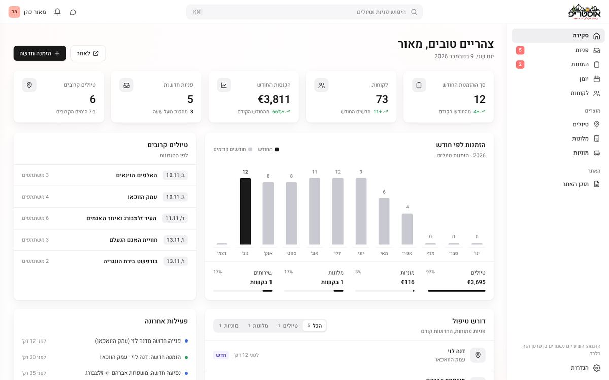
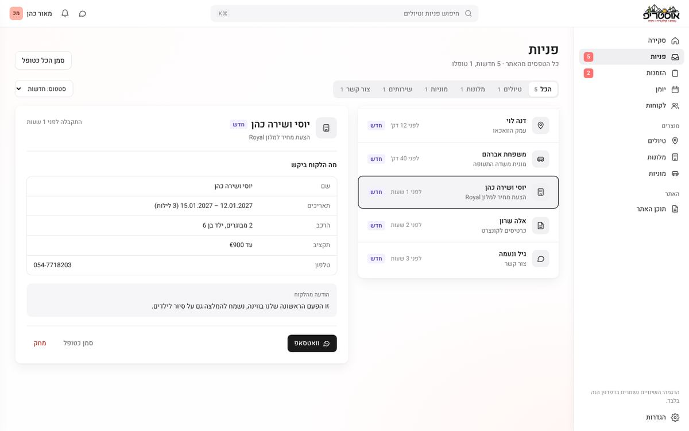
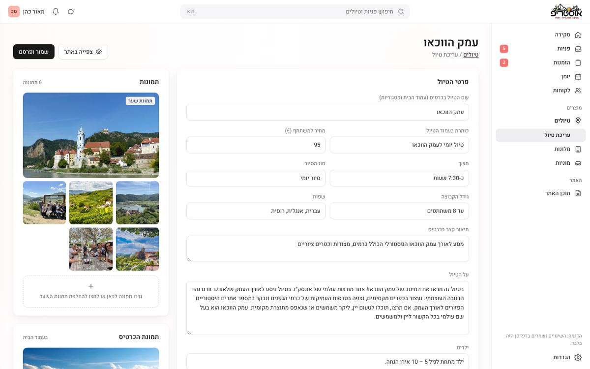
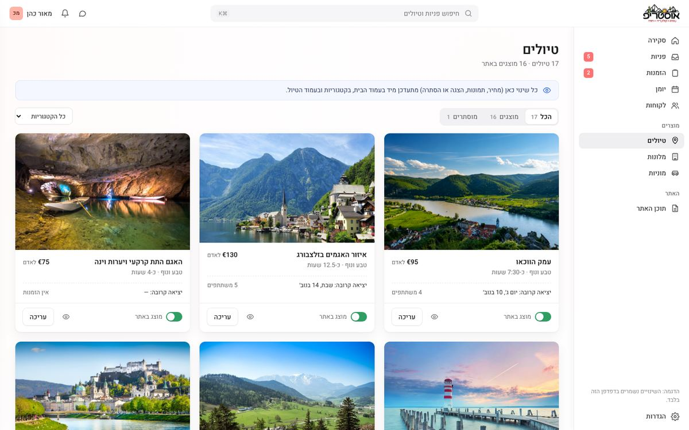
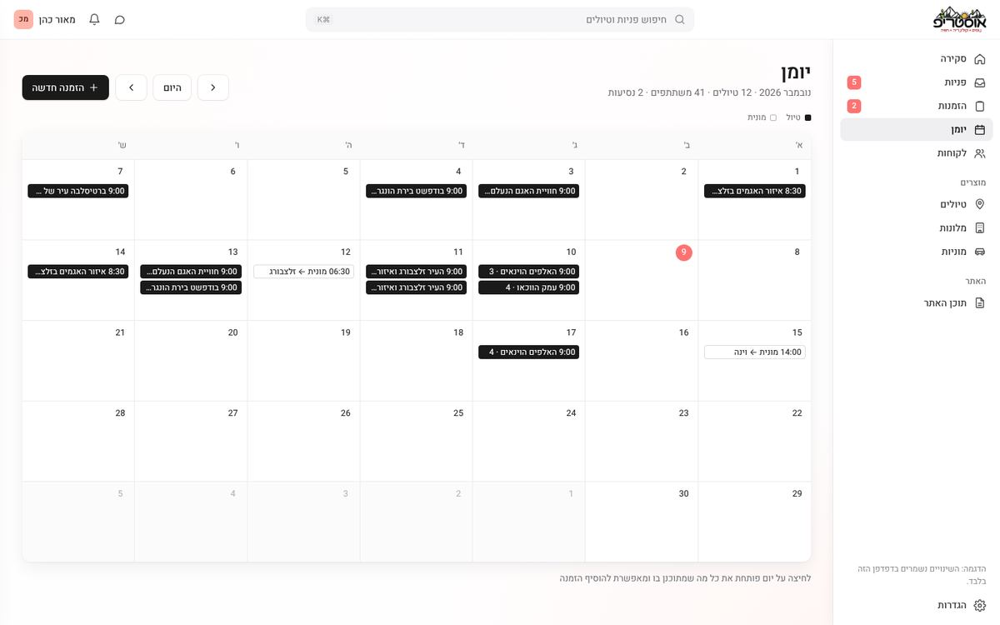

One Place for Every Request: Designing an Admin Dashboard for a Tour Operator in Vienna
Austrip is an Israeli tour operator in Vienna. After I redesigned and rebuilt their booking site (see the Austrip case study), I started thinking about the other side of it: the people who answer every booking, every hotel quote and every taxi order.
I found a small team juggling three tools. Bookings live in Checkfront, the site lives in WordPress, and changing a price or a photo means waiting for an outside developer. I decided to design one dashboard that brings all of it together.

A calmer way to run tours
I designed and built an admin dashboard for the Austrip team, with the long term goal of replacing Checkfront altogether.
The main goals were quite simple:
- One inbox for every form on the site
- Turning a request into a booking in one click
- Tours and taxi rides on one calendar
- Letting the team edit the site without a developer
Where everything starts to break
There wasn't one single pain point. Requests came in from four different forms and landed in different places, so nobody could see what still needed an answer. Bookings and taxis were tracked apart from each other, and every small content change on the site turned into a ticket for someone outside the team.
Main problems
Scattered requests
Tour bookings, hotel quotes, taxi orders and contact forms arrive in different places.
No clear status
Nothing shows which request is new, which is being handled and which is already approved.
A developer for every change
Prices, photos, schedules and tour texts can only be changed from the outside.
Quiet by design
A dashboard is used for hours every day, so it should stay calm. I designed nine screens in Figma first, then built them in code with Claude.
White surfaces separated by soft shadows, a subtle warm gradient in the background, the Heebo typeface for Hebrew and one neutral icon color. Color shows up only where it carries meaning, the status of a request:

Starting the day with clarity
The first screen answers two questions: what do I need to handle now, and how is the month going.
Stat cards
Five small cards on top, with the icon in one neutral color on the same row as the title.
Bookings by month
A simple chart where the current month stands out in black.
Upcoming tours and open requests
What is coming up next, and what is still waiting for an answer, filtered by type.
Recent activity
A short feed of what changed, so nobody has to ask.
Every screen starts empty and fills only with real data, so the empty states had to look finished too.
Every request in one list
Every form on the site, from a tour booking to a hotel quote or a taxi from the airport, arrives in one inbox. Segmented tabs filter by type, and a request opens right next to the list: the details on top, the customer's own message in its own box, and the next step as one button, "Convert to booking" or WhatsApp.

One page, no tabs
Editing a tour is a single scrolling page that follows the tour page itself: details, schedule, highlights, what's included, gallery and "Good to know". Photos and the publish status sit on the side, and "Save & publish" updates the live tour page.

On the tours list, a category filter narrows things down and one switch shows or hides a tour on the site.

Tours and taxis at a glance
The month view puts tours in solid black and taxi rides in an outline, so the two read apart without adding more colors. Clicking a day opens everything planned for it, and a new booking can be added from there.

What I learned
Two audiences, one product. A booking site serves travelers, and also the team that answers them. Designing the dashboard changed how I shaped every form on the site: each one now sends exactly what the team needs to reply.
Calm beats colorful. Early versions used tinted cards and colored tags. Taking color away and keeping it only for status made the important things stand out on their own.
Empty is a real state. Without demo data, every screen had to explain itself when it was empty and still look finished.
Where design actually helps
This project was about the people behind the site. When the team can see everything in one place and change the site on their own, they get time back for what they actually do: taking care of travelers.